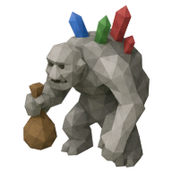
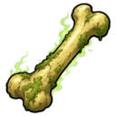
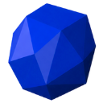
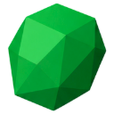

Gem Hoarder
Level 62 · 🕳️ Deepstone Mines
| Property | Value |
|---|---|
| Weakness | 🏹 Ranged |
| Hitpoints | 180 |
| Attack | 54 |
| Strength | 45 |
| Hits | 1–8 |
| Defence | 38 (+60 armour) |
| XP per kill | 810 |
| Slayer | ⛏️ Forewoman Brack gives tasks here (Slayer 30, combat 50) |
Drops
| Item | Amount | Chance |
|---|---|---|
 Grave Bones | 1 | Always |
| 840–2,000 | Always | |
| 2–5 | Common (40%) | |
| 1–3 | Common (30%) | |
 Uncut Sapphire | 1 | Common (15%) |
 Uncut Emerald | 1 | Uncommon (1 in 13) |
| 1 | Uncommon (1 in 33) | |
| 1 | Rare (1 in 100) |